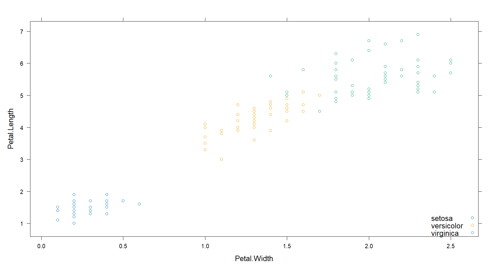
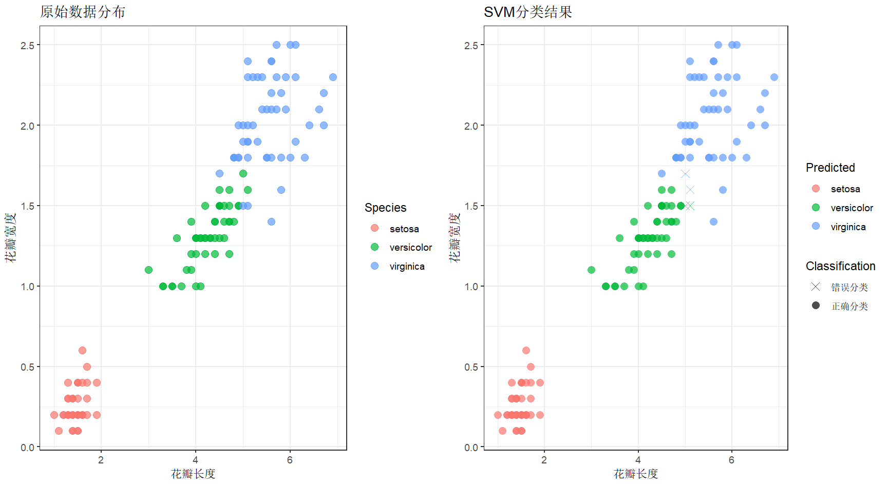

线性可分的SVM
基本概念
超平面 hyperplane
数据集可以被超平面分隔为二类，超平面为
记作
基于此超平面的分类模型可以用 表示,若 ，则分类标签 。若 此点恰好在超平面上。 时 。
函数距离 funcitional margin
考虑与 相平行的超平面可以写作 ，可以用 衡量一个点到超平面的距离，于是有
函数距离 的定义为
几何距离 geometrical margin
如果 和 等比例放大，函数距离会发生改变，但超平面实际上并未移动。
因此考虑几何距离，即点到平面距离公式
最大间隔超平面/最优间隔超平面
距离训练观测点最远的平面
支持向量
与最大间隔超平面相离最近的点，经过其且与最大间隔超平面平行的超平面称为支持超平面。
最大间隔分类器
当超平面离数据点间隔越大，分类结果越可靠。
由此定义最大间隔分类器的目标函数为
通过线性变换， 的取值并不固定，因此可以钦定支持超平面和最大间隔超平面的距离为1，于是目标函数化简为
约束条件
等价于
采用平方是为了求导方便,构造广义拉格朗日函数
改写为
对偶问题的求解
原始问题
满足 条件：
又因为为凸函数，因此原问题满足强对偶性。考虑其对偶问题
令偏导数为0即
可得
代入广义拉格朗日函数得
于是有
等价于以下问题
这是一个等式约束优化问题，使用拉格朗日乘数法便可得到最优值 ,从而得到 和 .
此时我们的分类函数为
因此，预测新点 只需要计算它与训练集点的内积即可。此外，我们只需计算支持向量，因为非支持向量的系数为0.
松弛因子与软间隔
非线性SVM
Code
R
1 | if(!require("lattice"))install.packages("lattice") |
运行以上得到的结果为


对于非线性可分的情况，采用更灵活的方式建立SVM
1 | x = iris[, -5] |
然后绘图来比对
1 | if(!require("gridExtra"))install.packages("gridExtra") |
